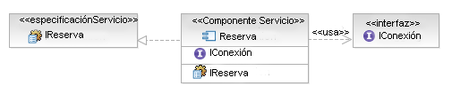

| Tarea: Especificación de componentes (SOA) |
|
 |
| Esta tarea especifica los detalles de los componentes de servicio que ejecutan un subsistema de diseño. |
|
Objetivo
Relaciones
| Roles | Principal:
| Adicional:
| Asistencia:
|
| Entradas | Obligatoria:
| Opcional:
| Externa:
|
| Salidas |
|
Descripción principal
Los servicios utilizados en una solución basada en arquitectura orientada a servicios se ejecutan a través del Artefacto: Componentes de servicio, que pertenece a un subsistema
alineado de función empresarial específico. Cada componente de servicio tendrá la responsabilidad de garantizar la QoS
de los servicios que ejecuta. Como activo a escala de la empresa, cada componente de servicio califica la financiación,
la dirección y el mantenimiento asociados con él. La gestión de la infraestructura debe realizarse para garantizar la
disponibilidad, el equilibrio de carga, la seguridad, el rendimiento, el mantenimiento de versiones y el buen
funcionamiento global del componente de servicio que será responsable de implementar la funcionalidad de un conjunto de
servicios y garantizar su calidad de servicio. Los componentes funcionales y los componentes técnicos se pueden
utilizar en diversos componentes de servicio.
|
Pasos
|
Interfaces de componentes de modelo
Los componentes, y en particular los componentes de servicio, deberían no proporcionar operaciones directamente; en su
lugar, deberían utilizar infraestructuras para describir un conjunto de operaciones y, a continuación,
proporcionar/ejecutar la interfaz. Esto se describe a grandes rasgos en el RUP, véase la Tarea: Diseño de subsistema (SOA) y la Tarea: Identificar elementos de diseño.
Ejemplo
En nuestro ejemplo Alquiler de coche hemos identificado (a través del análisis del subsistema) la necesidad de un
componente de servicio de reserva. Para garantizar un diseño reutilizable y flexible podemos también crear una interfaz
de reserva correspondiente, o utilizar la Especificación de servicio (de Tarea: Especificación de servicio) para describir la interfaz en
nuestro componente de servicio. El componente ejecutará (en términos de UML) cada interfaz suministrada y podrá también
indicar su dependencia en otras interfaces de componente utilizando una relación de uso de UML, tal como se muestra en
el siguiente diagrama.

Tenga en cuenta que hemos elidido los detalles de las propias interfaces para mayor claridad.
|
Atributos de componentes de modelo
En este paso, definiremos los detalles de cada componente de servicio, lo que incluye atributos, servicios, políticas y
reglas. La plantilla que sirve para documentar la especificación de componente de servicio incluirá los siguientes
atributos:
-
Propiedades o atributos
-
Reglas
-
Variaciones
-
Depende de <otros componentes>
-
Composición de componentes funcionales y técnicos
-
Servicios suministrados
-
Servicios necesarios
|
Sucesos y mensajes de componentes de modelo
| Durante esta actividad, identificamos los sucesos que el componente debe detectar y a los que debe responder cuando se
desencadenan. Los mensajes de componente entrantes y salientes también se especifican. En el caso de los servicios
dirigidos por cambios en los datos, se debe tomar una vista centrada en los datos y los procesos empresariales no incluidos
en el ámbito de la solución basada en servicios deben identificarse y valorarse para la generación de sucesos y el
suministro de datos a los servicios del cliente en la solución orientada a servicios. Por ejemplo, un nuevo cliente puede
ser añadido por varios procesos empresariales dentro de un paquete ISV. En todos los casos, los mismos datos pueden no
capturarse para el cliente, dependiendo del contexto específico del proceso empresarial. Los servicios de cliente que
necesiten conocer los nuevos clientes a través de un servicio de proveedor deberán poder controlar la invocación del nuevo
servicio de cliente independientemente del proceso empresarial que lo genere. |
Estructura interna de componentes de modelo
Durante esta actividad, es importante crear al menos un diagrama de clase que muestre las relaciones
entre los componentes técnicos y funcionales de cada componente de servicio. El modelado de UML estándar se aplica en
esta etapa. Se recomienda el uso de patrones para estructurar el gráfico de objetos resultante de forma que sea
extensible y esté abierto a cambios. Si se anticipa un grado mayor de cambios, es recomendable realizar un análisis de variabilidad en esta etapa.
Tal como describimos en la tarea anterior, cuando se diseñan cambios, o se anticipa un impacto importante en el diseño
y la estructura del sistema de TI como consecuencia de cambios empresariales futuros, entonces sería inteligente
emplear las técnicas de Análisis de variabilidad. Estas técnicas refactorizan los factores comunes y
externalizan las variaciones mediante patrones de diseño. Los factores en común y las variaciones descubiertas
previamente pueden utilizarse como punto de partida y pueden aumentar con el uso de patrones de diseño comunes como
Estrategia, Estado [i], Objeto de regla [ii], Objeto de tipo, etc.
El análisis realizado durante el diseño detallado identifica factores comunes, se centra en la creación de variaciones
conectables y entraña seis principios que ayudan a separar los aspectos más cambiantes de los menos de los sistemas de
software, aislando y encapsulando los cambios:
-
Separar y modelar los aspectos cambiantes de los no cambiantes del dominio: identificar, separar, encapsular y
externalizar variaciones en aumento.
-
Crear jerarquías de tipos para cada punto de variación.
-
Asignar tipos de regla a cada tipo de variación.
-
Implementar tres niveles de abstracción; utilizar metapatrón de herencia agregado
-
Empezar a partir de niveles de reutilización superiores a los objetos y crear activos en cada nivel de
reutilización; crear infraestructuras pequeñas alrededor de los puntos de variación. En general, cada
infraestructura no debería tener más de 7+-2 clases.
-
Cada elemento de reutilización tiene sus propios comportamientos. Externalizar el comportamiento como datos
configurables que se puedan leer en la aplicación para permitir un cableado ligero.
[i] Erich
Gamma, Richard
Helm, Ralph
Johnson, John
Vlissides, Design Patterns, Addision-Wesley 1994.
[ii] Arsanjani, A., Rule Object: A Pattern Language for Flexible Modeling and Construction of Business Rules,
Washington University Technical Report number: wucs-00-29, Proceedings of the Pattern Languages of Program
Design, 2000.
|
Flujo de componentes de modelo
Durante esta actividad, identificamos el flujo interno dentro del componente de servicio. Esto se puede representar
como diagrama de actividades o secuencias.
Consideración de ISV: El flujo interno de componentes dentro de un componente de paquete ISV puede o no
exponerse y/o configurarse dependiendo del paquete. Si los objetos del componente de ISV se exponen y configuran, su
flujo podrá adaptarse y personalizarse para que se ajuste mejor a la solución. Sin embargo, uno debería ser consciente
de los problemas de mantenimiento potenciales asociados con ello. En muchos casos, no será posible, ni siquiera
necesario, identificar el flujo interno de componentes de un paquete ISV. En este caso, el componente ISV debería ser
tenido en cuenta como "caja negra", con sólo servicios documentados expuestos y ejecutados.
|
|
Propiedades
| Varias apariciones |  |
| Condicionado por sucesos | |
| Continuo | |
| Opcional | |
| Planeado | |
| Se puede repetir | |
Más información
© Copyright IBM Corp. 1987, 2006. Reservados todos los derechos.
|
|